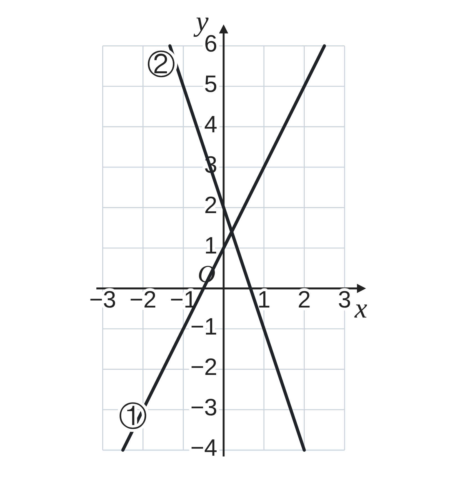
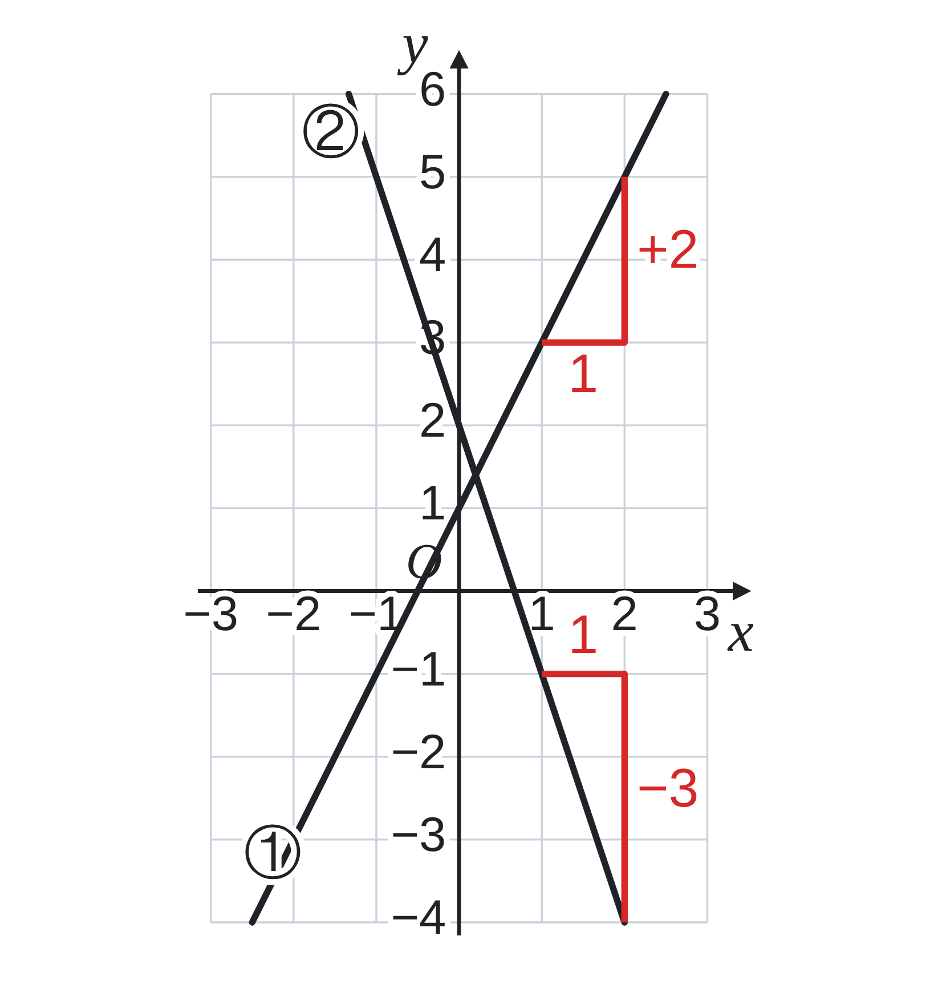
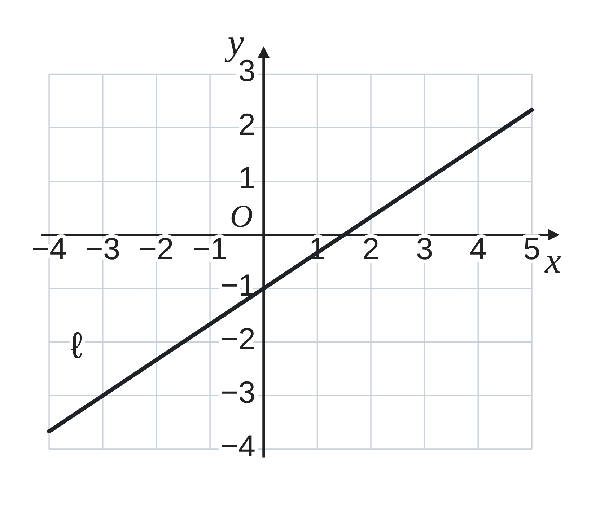
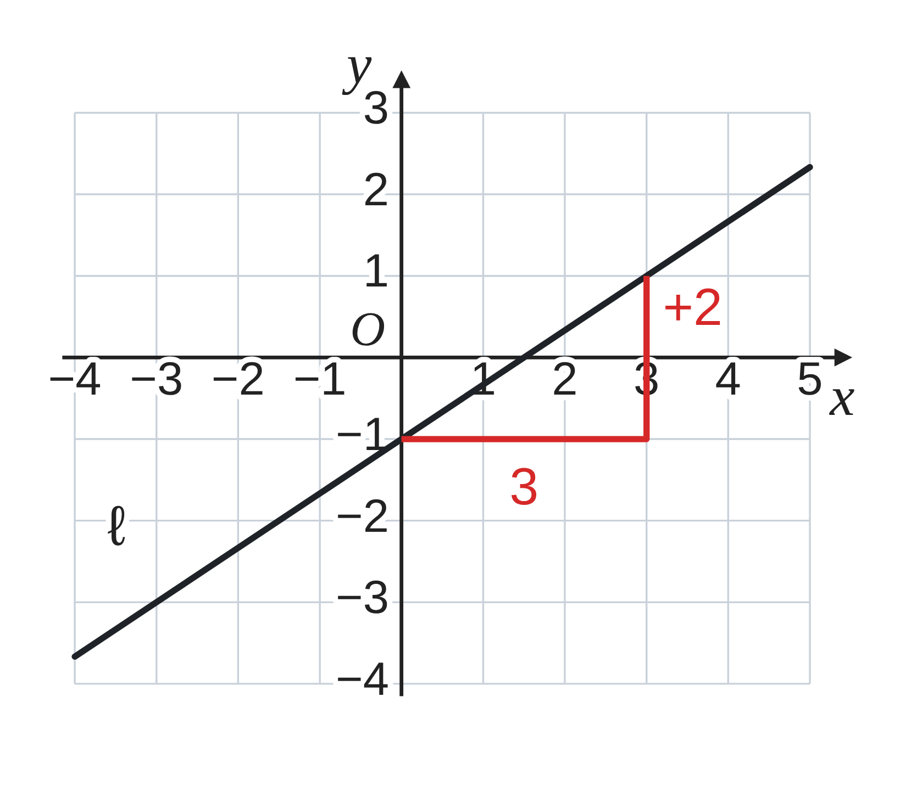
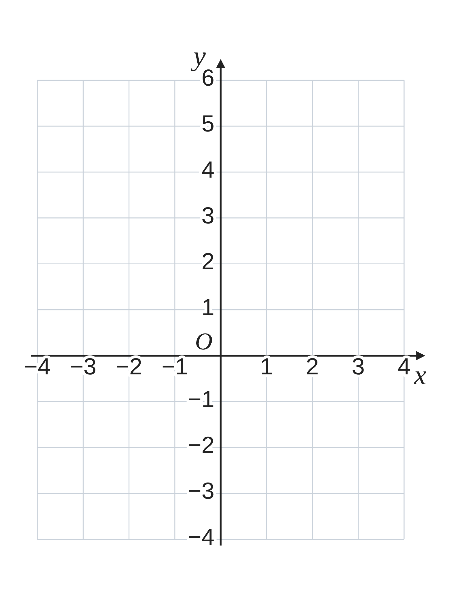

ペア学習
第5時 グラフのかたむきぐあいを、数で表そう
第4時までの重要語句から、1人1問ずつ、言葉を選んで出題する。
聞かれた人は、その言葉の意味を、自分の言葉で言う。
切片
平行移動
変化の割合
一次関数 第5時 グラフのかたむきぐあいを、数で表そう
めあて
第5時 グラフのかたむきぐあいを、数で表そう
学習課題
右の図は、一次関数
① y＝2x+1、② y＝−3x+2 のグラフである。
それぞれ、グラフ上の点から右へ 1 進むと、
上または下へ、どれだけ進むだろう。
その量は、式のどこに現れているだろう。
【読みとる】図に、書きこんでもよい。

一次関数 第5時 グラフのかたむきぐあいを、数で表そう
学習課題のまとめ
第5時 グラフのかたむきぐあいを、数で表そう
① 右へ 1 進むと、上へ 2 進む。
② 右へ 1 進むと、下へ 3 進む。
進む量は、式の x の係数
（2 と −3）と同じ。
（変化の割合と同じ。
下へ進むときは、負の数）

一次関数 第5時 グラフのかたむきぐあいを、数で表そう
ことば
第5時 グラフのかたむきぐあいを、数で表そう
y＝ax+b の a を、グラフの という。
傾きは、グラフ上の点から 進んだとき、
上へ進む量で、 と等しい。
（下へ進むときは、負の数で表す。）
a＞0 のとき、グラフは の直線。
a＜0 のとき、グラフは の直線。
一次関数 第5時 グラフのかたむきぐあいを、数で表そう
ことば
第5時 グラフのかたむきぐあいを、数で表そう
y＝ax+b の a を、グラフの傾きという。
傾きは、グラフ上の点から右へ 1 進んだとき、
上へ進む量で、変化の割合と等しい。
（下へ進むときは、負の数で表す。）
a＞0 のとき、グラフは右上がりの直線。
a＜0 のとき、グラフは右下がりの直線。
一次関数 第5時 グラフのかたむきぐあいを、数で表そう
例題
第5時 グラフのかたむきぐあいを、数で表そう
一次関数 y＝
2
3
x− のグラフ（右の図）は、
右へ 進むと、上へどれだけ進むだろう。
また、傾きと切片を答えよう。

一次関数 第5時 グラフのかたむきぐあいを、数で表そう
例題 解答
第5時 グラフのかたむきぐあいを、数で表そう
傾きは 2⁄3。右へ 1 進むと、上へ 2⁄3 進む。
右へ 3 進むと 2⁄3×3＝2
上へ 2 進む。
（右へ 3、上へ 2 なら、方眼の交点から
交点へ進めて、かきやすい。）
傾き 2⁄3、切片 −1

一次関数 第5時 グラフのかたむきぐあいを、数で表そう
考えよう
第5時 グラフのかたむきぐあいを、数で表そう
次の4つの一次関数のグラフを、
右の座標平面にかいて、くらべよう。
ア
y＝x+1
イ
y＝3x+1
ウ
y＝
1
3
x+1
エ
y＝−3x+1
傾きが変わると、グラフはどのように変わるだろう。
①
4つのグラフを、右の座標平面にかこう。
かいたら、気づいたことを書こう。
②
傾きとグラフの形の関係を、「傾き」「右上がり」
「右下がり」などのことばを使って、説明しよう。
発展 演習まで解き終わった人は、考えてみよう！ 傾きが同じで、切片がちがう 2つの一次関数 y＝2x+1 と y＝2x−3 のグラフは、交わることがあるだろうか。わけも考えよう。

一次関数 第5時 グラフのかたむきぐあいを、数で表そう
振り返り
第5時 グラフのかたむきぐあいを、数で表そう
今日のめあて
傾き
右上がり
右下がり
今日わかったことを、ペアで1つずつ言い合おう。
ワークシートと演習プリントを出そう。（未完成でも出す）
一次関数 第5時 グラフのかたむきぐあいを、数で表そう